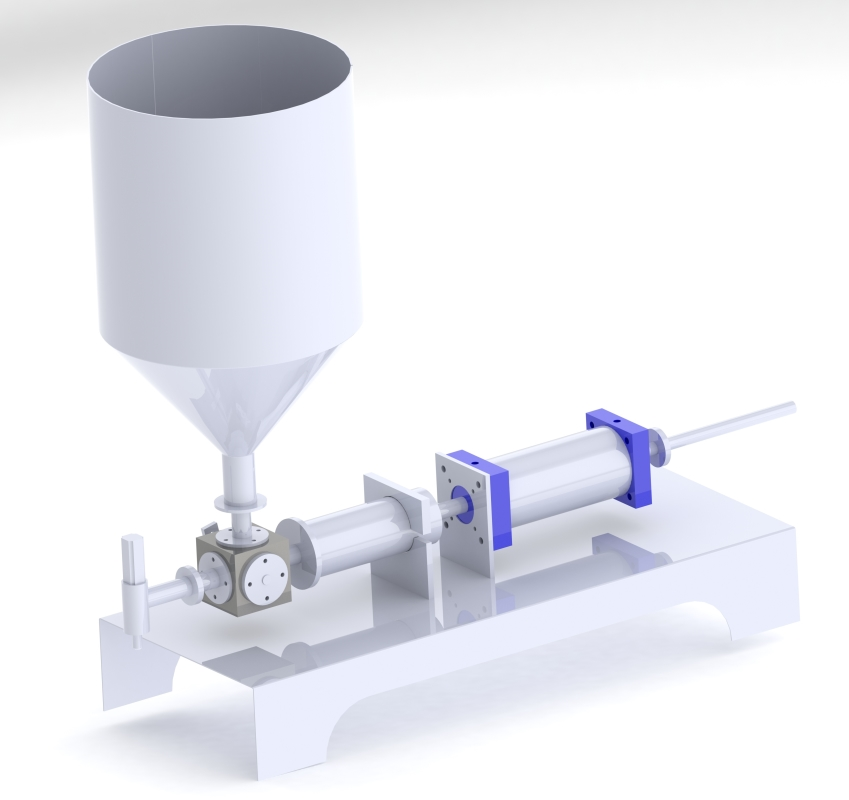

PRODUCTS
BV aerosol filling & packaging machinery is one of the leading manufacturers of Aerosol products. We are renowned for our premium quality of machinery. We design equipment's specifically to meet your unique requirements. We have carved a niche in the industry by manufacturing equipments that are accommodating, dependable, and precise.
Our machine's are manufactured fully based on pneumatic & mechanical system. We are manufacturing fully automatic & semi automatic machines. Our vast products are listed below.
GAS FILLING MACHINE
Gas filling machines are used to fill gases in aerosol products like spray bottles used for industrial or household products.
Features :
- It is easy to set the quantity of gas to be filled in ml or grams in the bottle.
- Minimum operating pressure should be 6 to 7 kg/cm2.
- It is fully operated by pneumatic system reducing the usage of electricity.
- It automatically cuts-off the flow of gases when the machine is in idle state.
CRIMPING MACHINE
Crimping machines are used to crimp containers like perfume bottle sprayer, snow bottle sprayer, room fresher, automobile car spray cleaner etc..
Features :
- Easy to adjust the crimping height based on the bottle size.
- Minimum operating pressure should be 6 to 7 kg/cm2.
- It can crimp upto 1 inch diameter
- We can easily set the crimp diameter based on requirement
LIQUID FILLING MACHINE

Liquid filling machines are used to fill high viscosity fluids like tomato sauce, cream , paste, honey etc in bottles.
Features :
- Easy to adjust the quantity of the fluid with high degree of accuracy.
- Minimum operating pressure should be 6 to 7kg/cm2.
- It is fully operated by pneumatic system reducing the usage of electricity.
- Operating filling capacity is between 10 ml to 1 litre.
DE-CRIMPING MACHINE
De-Crimping machines are used to de-crimp valve of materials like perfume bottle sprayer, snow bottle sprayer, room fresher, automobile car spray cleaner etc..
Features :
- Minimum operating pressure should be 6 to 7 kg/cm2.
- It can de-crimp upto 1 inch diameter
- We can easily set the crimp diameter and height based on requirement
LPG BOOSTER PUMP
LPG booster pump is used to regulate the flow of gases in a constant pressure.
Features :
- Minimum operating pressure should be 1 to 10kg/cm2 uniformly distributed.
- It is fully operated by pneumatic system reducing the usage of electricity.
- It automatically cuts-off the flow of gases when the machine is in idle state.
** All images shown are rendered images (virtual prototype design) not actual images of the product
To place orders / request demo please call our executives - +91-9043-420-879, +91-7887-661-017